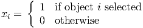
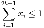
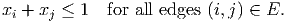
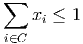

- You cannot invest in all of them.
- Investment 1 must be chosen if investment 3 is chosen.
- Investment 5 can be chosen only if investment 2 is also chosen.
- You must choose either both investments 1 and 6 or neither.
- You must choose either at least one of the investments 1,2,3, and/or at least two investments from 2,5,6,7.
Model this as a 0-1 integer programming feasibility problem.
- (15 points) We have a collection of 2k - 1 objects, where k is a positive integer.
Let
 Assume that at most one item can be selected from each subset of size k. Show that the constraint
 has Chvatal rank at most one.
- (10 points) In a particular node packing problem on a graph G = (V,E), we have a
clique C of size 17. The initial LP relaxation only includes constraints for the
edges,
 Show that the clique constraint
 has Chvatal rank at most 4.
has an LP relaxation which has optimal form
with optimal basic feasible solution x = (0, 5.2, 0, 2.6) with value 7.2.
- (10 points) Assume we know a feasible integer solution with value 10. Does this tell us anything about the nonbasic variables x1 or x3 in an optimal integer solution?
- (10 points) What are the Gomory cutting planes corresponding to the two constraints?
- (10 points) Solve the minimum spanning tree problem on the following graph:

- We could imagine a cutting plane approach to solve the minimum spanning tree
problem, initializing with the constraints that every vertex is adjacent to at least one
edge in the solution, and the total number of edges is one less than the number of
vertices.
- (10 points) Show that such a relaxation for the graph above has a feasible solution with value 36.
- (10 points) Can you find valid constraints that are violated by your solution in part 4(b)i?
- (5 points) Consider now a general graph. Let S denote the set of incidence vectors of spanning trees. Given a feasible solution to a relaxation of the minimum spanning tree with ⁄∈ conv(S), a separation routine can be designed to find a violated valid constraint for conv(S). In the best case, would you expect such a routine to run in polynomial time? Justify your answer.